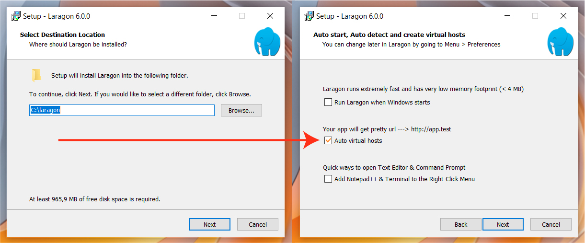
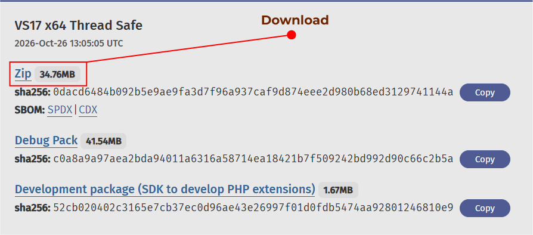
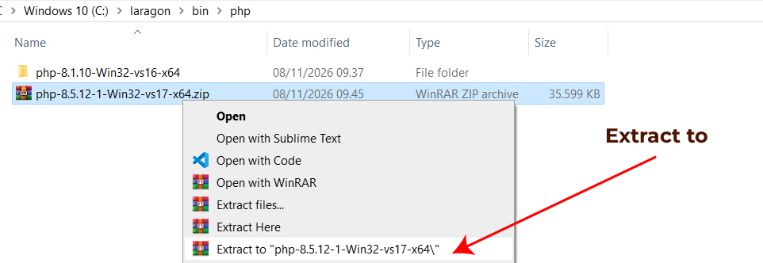
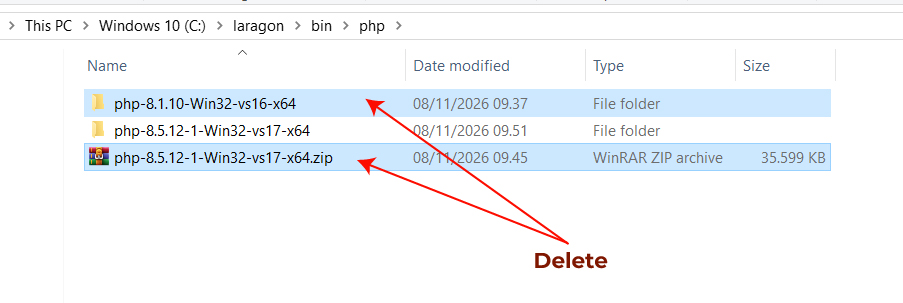
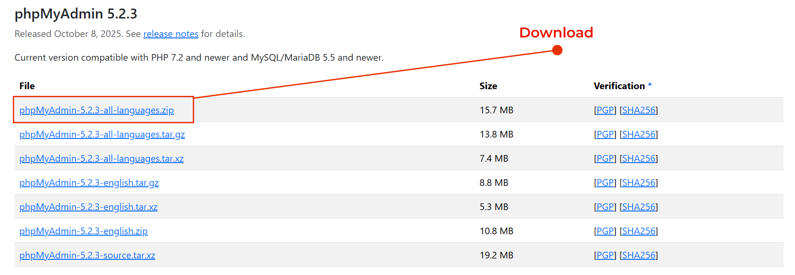
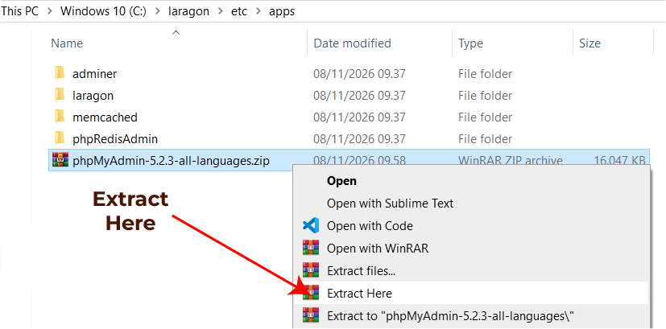
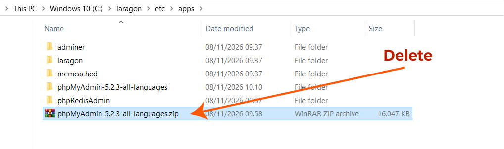
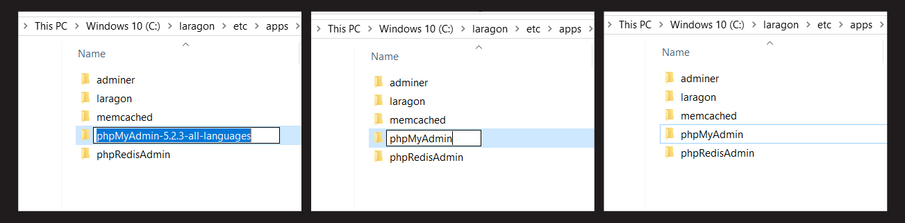
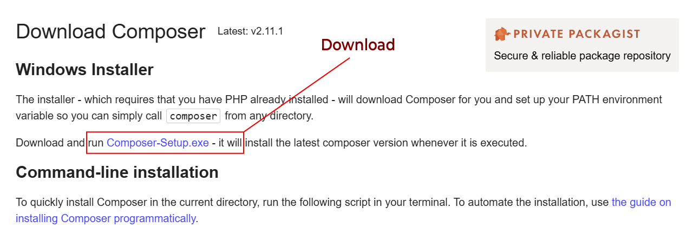
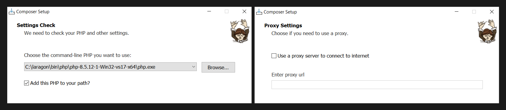

LARAVEL CHEATSHEET : Install & Persiapan
Ananda Daniswara - Skylotus DesignMenu Utama |
01. Download Laragon Ver.6
Download Laragon versi gratis lalu instal dan ceklis virtual hosts seperti pada gambar
https://github.com/leokhoa/laragon/releases/download/6.0.0/laragon-wamp.exe

02. Download PHP
Download PHP versi terbaru agar bisa menjalankan laravel 13 atau di atasnya
https://www.php.net/downloads.php

03. Ekstrak PHP
Pindahkan file .zip berisi PHP yang telah di-download ke direktori ke C:\laragon\bin\php, lalu pilih extract to agar terekstrak beserta nama foldenya

04. Download phpMyAdmin
Download phpMyAdmin agar bisa menjalankan di Laragon
https://www.phpmyadmin.net/downloads/

05. Ekstrak phpMyAdmin
Pindahkan file .zip berisi phpMyAdmin yang telah di-download ke direktori ke C:\laragon\etc\apps, lalu cukup pilih extract here
06. Rename folder phpMyAdmin
Hapus file .zip lalu rename phpMyAdmin-5.2.3-all-languages menjadi phpMyAdmin

07. Download Composer
https://getcomposer.org/download/


08. Cek Versi PHP dan Composer
# php
CMD: php -v
# composer
CMD: composer -v